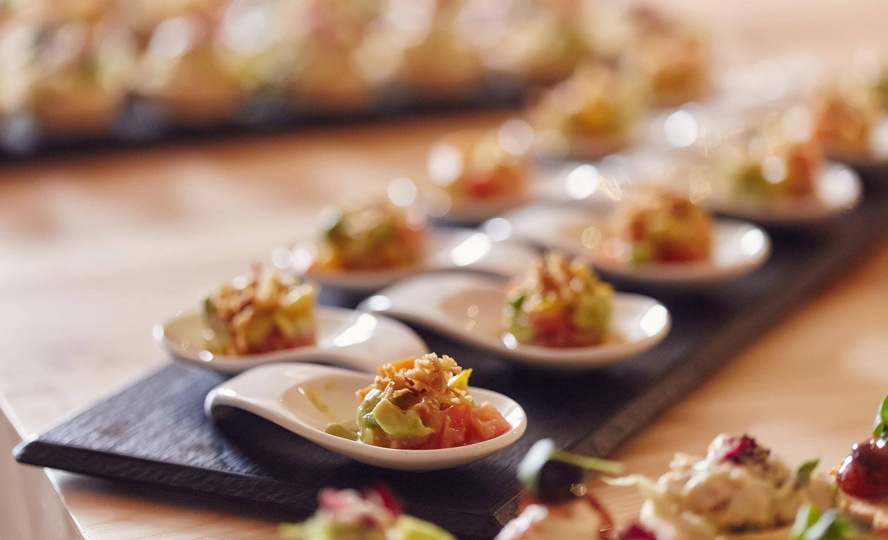

culinary Excellence
Make Memories with Chef Jacob

Why will your visitors come to your site instead of another to get this information or complete the actions? This website will be easy to use and understand, clean and thoughtful. Here in Houston Texas, there are not many professional chefs offering all the services this website offers, this will be a great advantage for the client to have access to. This website will also provide information about local food events, meet and greets in the foodie world, recommendations for other great restaurants to try outside of the personal chef experience. Information about foods, spices, drinks, and where to find them. Postings from the chef on social media about events, updates on new cuisines and what’s trending in the foodie world. This website is not just for the average joe who likes food, this website is for foodies, people who want a personal chef experience to celebrate food with family, friends, clients and coworkers alike. Someone looking to be emersed in the foodie world, where they have a one stop shop to find what’s happing in the local Houston Texas seen and more. This website is a celebration of cuisine…